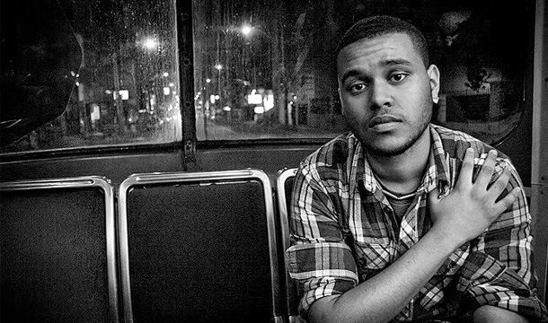

2009
Em agosto de 2009, Tesfaye começou a lançar músicas anonimamente no YouTube.No ano seguinte, ele conheceu o produtor Jeremy Rose em uma festa. Rose perguntou a Tesfaye se ele queria trabalhar juntos como um projeto de R&B sombrio depois de ouvi-lo fazer freestyle sobre um instrumental. As músicas produzidas posteriormente receberam cobertura de vários meios de comunicação, incluindo Pitchfork e The New York Times.
